3.5 面向连接的传输: TCP#
3.5 Connection-Oriented Transport: TCP
Now that we have covered the underlying principles of reliable data transfer, let’s turn to TCP—the Internet’s transport-layer, connection-oriented, reliable transport protocol. In this section, we’ll see that in order to provide reliable data transfer, TCP relies on many of the underlying principles discussed in the previous section, including error detection, retransmissions, cumulative acknowledgments, timers, and header fields for sequence and acknowledgment numbers. TCP is defined in RFC 793, RFC 1122, RFC 1323, RFC 2018, and RFC 2581.
3.5.1 TCP 连接#
3.5.1 The TCP Connection
TCP is said to be connection-oriented because before one application process can begin to send data to another, the two processes must first “handshake” with each other—that is, they must send some preliminary segments to each other to establish the parameters of the ensuing data transfer. As part of TCP connection establishment, both sides of the connection will initialize many TCP state variables (many of which will be discussed in this section and in Section 3.7) associated with the TCP connection.
The TCP “connection” is not an end-to-end TDM or FDM circuit as in a circuit-switched network. Instead, the “connection” is a logical one, with common state residing only in the TCPs in the two communicating end systems. Recall that because the TCP protocol runs only in the end systems and not in the intermediate network elements (routers and link-layer switches), the intermediate network elements do not maintain TCP connection state. In fact, the intermediate routers are completely oblivious to TCP connections; they see datagrams, not connections.
A TCP connection provides a full-duplex service: If there is a TCP connection between Process A on one host and Process B on another host, then application-layer data can flow from Process A to Process B at the same time as application-layer data flows from Process B to Process A. A TCP connection is also always point-to-point, that is, between a single sender and a single receiver. So- called “multicasting” (see the online supplementary materials for this text)—the transfer of data from one sender to many receivers in a single send operation—is not possible with TCP. With TCP, two hosts are company and three are a crowd!
Let’s now take a look at how a TCP connection is established. Suppose a process running in one host wants to initiate a connection with another process in another host. Recall that the process that is initiating the connection is called the client process, while the other process is called the server process. The client application process first informs the client transport layer that it wants to establish a connection to a process in the server. Recall from Section 2.7.2, a Python client program does this by issuing the command
clientSocket.connect((serverName, serverPort))
where serverName is the name of the server and serverPort identifies the process on the server. TCP in the client then proceeds to establish a TCP connection with TCP in the server. At the end of this section we discuss in some detail the connection-establishment procedure. For now it suffices to know that the client first sends a special TCP segment; the server responds with a second special TCP segment; and finally the client responds again with a third special segment. The first two segments carry no payload, that is, no application-layer data; the third of these segments may carry a payload. Becausethree segments are sent between the two hosts, this connection-establishment procedure is often referred to as a three-way handshake.
CASE HISTORY
Vinton Cerf, Robert Kahn, and TCP/IP
In the early 1970s, packet-switched networks began to proliferate, with the ARPAnet—the precursor of the Internet—being just one of many networks. Each of these networks had its own protocol. Two researchers, Vinton Cerf and Robert Kahn, recognized the importance of interconnecting these networks and invented a cross-network protocol called TCP/IP, which stands for Transmission Control Protocol/Internet Protocol. Although Cerf and Kahn began by seeing the protocol as a single entity, it was later split into its two parts, TCP and IP, which operated separately. Cerf and Kahn published a paper on TCP/IP in May 1974 in IEEE Transactions on Communications Technology [Cerf 1974].
The TCP/IP protocol, which is the bread and butter of today’s Internet, was devised before PCs, workstations, smartphones, and tablets, before the proliferation of Ethernet, cable, and DSL, WiFi, and other access network technologies, and before the Web, social media, and streaming video. Cerf and Kahn saw the need for a networking protocol that, on the one hand, provides broad support for yet-to-be-defined applications and, on the other hand, allows arbitrary hosts and link-layer protocols to interoperate.
In 2004, Cerf and Kahn received the ACM’s Turing Award, considered the “Nobel Prize of Computing” for “pioneering work on internetworking, including the design and implementation of the Internet’s basic communications protocols, TCP/IP, and for inspired leadership in networking.”
Once a TCP connection is established, the two application processes can send data to each other. Let’s consider the sending of data from the client process to the server process. The client process passes a stream of data through the socket (the door of the process), as described in Section 2.7. Once the data passes through the door, the data is in the hands of TCP running in the client. As shown in Figure 3.28, TCP directs this data to the connection’s send buffer, which is one of the buffers that is set aside during the initial three-way handshake. From time to time, TCP will grab chunks of data from the send buffer and pass the data to the network layer. Interestingly, the TCP specification [RFC 793] is very laid back about specifying when TCP should actually send buffered data, stating that TCP should “send that data in segments at its own convenience.” The maximum amount of data that can be grabbed and placed in a segment is limited by the maximum segment size (MSS). The MSS is typically set by first determining the length of the largest link-layer frame that can be sent by the local sending host (the so- called maximum transmission unit, MTU), and then setting the MSS to ensure that a TCP segment (when encapsulated in an IP datagram) plus the TCP/IP header length (typically 40 bytes) will fit into a single link-layer frame. Both Ethernet and PPP link-layer protocols have an MTU of 1,500 bytes. Thus a typical value of MSS is 1460 bytes. Approaches have also been proposed for discovering the path MTU —the largest link-layer frame that can be sent on all links from source to destination [RFC 1191] —and setting the MSS based on the path MTU value. Note that the MSS is the maximum amount of application-layer data in the segment, not the maximum size of the TCP segment including headers. (This terminology is confusing, but we have to live with it, as it is well entrenched.)
TCP pairs each chunk of client data with a TCP header, thereby forming TCP segments. The segments are passed down to the network layer, where they are separately encapsulated within network-layer IP datagrams. The IP datagrams are then sent into the network. When TCP receives a segment at the other end, the segment’s data is placed in the TCP connection’s receive buffer, as shown in Figure 3.28. The application reads the stream of data from this buffer. Each side of the connection has its own send buffer and its own receive buffer. (You can see the online flow-control applet at http://www.awl.com/kurose-ross, which provides an animation of the send and receive buffers.)
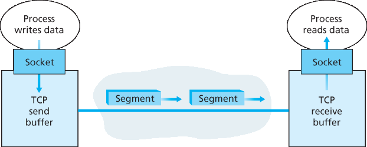
Figure 3.28 TCP send and receive buffers
We see from this discussion that a TCP connection consists of buffers, variables, and a socket connection to a process in one host, and another set of buffers, variables, and a socket connection to a process in another host. As mentioned earlier, no buffers or variables are allocated to the connection in the network elements (routers, switches, and repeaters) between the hosts.
3.5.2 TCP 段结构#
3.5.2 TCP Segment Structure
Having taken a brief look at the TCP connection, let’s examine the TCP segment structure. The TCP segment consists of header fields and a data field. The data field contains a chunk of application data. As mentioned above, the MSS limits the maximum size of a segment’s data field. When TCP sends a large file, such as an image as part of a Web page, it typically breaks the file into chunks of size MSS (except for the last chunk, which will often be less than the MSS). Interactive applications, however, often transmit data chunks that are smaller than the MSS; for example, with remote login applications like Telnet, the data field in the TCP segment is often only one byte. Because the TCP header is typically 20 bytes (12 bytes more than the UDP header), segments sent by Telnet may be only 21 bytes in length.
Figure 3.29 shows the structure of the TCP segment. As with UDP, the header includes source and destination port numbers, which are used for multiplexing/demultiplexing data from/to upper-layer applications. Also, as with UDP, the header includes a checksum field. A TCP segment header also contains the following fields:
The 32-bit sequence number field and the 32-bit acknowledgment number field are used by the TCP sender and receiver in implementing a reliable data transfer service, as discussed below.
The 16-bit receive window field is used for flow control. We will see shortly that it is used to indicate the number of bytes that a receiver is willing to accept.
The 4-bit header length field specifies the length of the TCP header in 32-bit words. The TCP header can be of variable length due to the TCP options field. (Typically, the options field is empty, so that the length of the typical TCP header is 20 bytes.) - The optional and variable-length options field is used when a sender and receiver negotiate the
maximum segment size (MSS) or as a window scaling factor for use in high-speed networks. A time- stamping option is also defined. See RFC 854 and RFC 1323 for additional details. - The flag field contains 6 bits. The ACK bit is used to indicate that the value carried in the acknowledgment field is valid; that is, the segment contains an acknowledgment for a segment that has been successfully received. The RST, SYN, and FIN bits are used for connection setup and teardown, as we will discuss at the end of this section. The CWR and ECE bits are used in explicit congestion notification, as discussed in Section 3.7.2. Setting the PSH bit indicates that the receiver should pass the data to the upper layer immediately. Finally, the URG bit is used to indicate that there is data in this segment that the sending-side upper-layer entity has marked as “urgent.” The location of the last byte of this urgent data is indicated by the 16-bit urgent data pointer field. TCP must inform the receiving-side upper- layer entity when urgent data exists and pass it a pointer to the end of the urgent data. (In practice, the PSH, URG, and the urgent data pointer are not used. However, we mention these fields for completeness.)
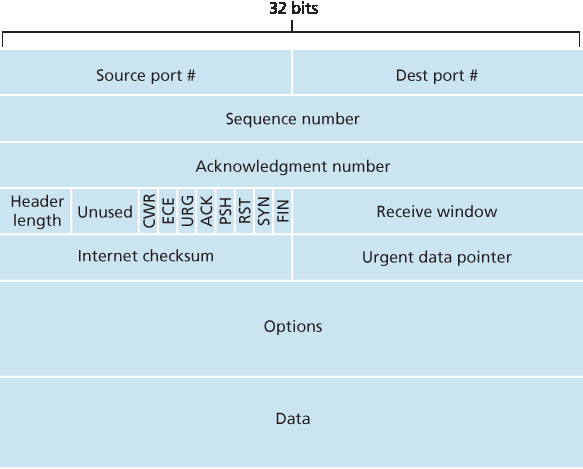
Figure 3.29 TCP segment structure
Our experience as teachers is that our students sometimes find discussion of packet formats rather dry and perhaps a bit boring. For a fun and fanciful look at TCP header fields, particularly if you love Legos™ as we do, see [Pomeranz 2010].
Sequence Numbers and Acknowledgment Numbers#
Two of the most important fields in the TCP segment header are the sequence number field and the acknowledgment number field. These fields are a critical part of TCP’s reliable data transfer service. But before discussing how these fields are used to provide reliable data transfer, let us first explain what exactly TCP puts in these fields.
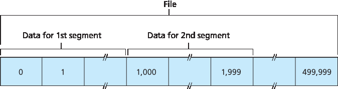
Figure 3.30 Dividing file data into TCP segments
TCP views data as an unstructured, but ordered, stream of bytes. TCP’s use of sequence numbers reflects this view in that sequence numbers are over the stream of transmitted bytes and not over the series of transmitted segments. The sequence number for a segment is therefore the byte-stream number of the first byte in the segment. Let’s look at an example. Suppose that a process in Host A wants to send a stream of data to a process in Host B over a TCP connection. The TCP in Host A will implicitly number each byte in the data stream. Suppose that the data stream consists of a file consisting of 500,000 bytes, that the MSS is 1,000 bytes, and that the first byte of the data stream is numbered 0. As shown in Figure 3.30, TCP constructs 500 segments out of the data stream. The first segment gets assigned sequence number 0, the second segment gets assigned sequence number 1,000, the third segment gets assigned sequence number 2,000, and so on. Each sequence number is inserted in the sequence number field in the header of the appropriate TCP segment.
Now let’s consider acknowledgment numbers. These are a little trickier than sequence numbers. Recall that TCP is full-duplex, so that Host A may be receiving data from Host B while it sends data to Host B (as part of the same TCP connection). Each of the segments that arrive from Host B has a sequence number for the data flowing from B to A. The acknowledgment number that Host A puts in its segment is the sequence number of the next byte Host A is expecting from Host B. It is good to look at a few examples to understand what is going on here. Suppose that Host A has received all bytes numbered 0 through 535 from B and suppose that it is about to send a segment to Host B. Host A is waiting for byte 536 and all the subsequent bytes in Host B’s data stream. So Host A puts 536 in the acknowledgment number field of the segment it sends to B.
As another example, suppose that Host A has received one segment from Host B containing bytes 0 through 535 and another segment containing bytes 900 through 1,000. For some reason Host A has not yet received bytes 536 through 899. In this example, Host A is still waiting for byte 536 (and beyond) in order to re-create B’s data stream. Thus, A’s next segment to B will contain 536 in the acknowledgment number field. Because TCP only acknowledges bytes up to the first missing byte in the stream, TCP is said to provide cumulative acknowledgments.
This last example also brings up an important but subtle issue. Host A received the third segment (bytes 900 through 1,000) before receiving the second segment (bytes 536 through 899). Thus, the third segment arrived out of order. The subtle issue is: What does a host do when it receives out-of-order segments in a TCP connection? Interestingly, the TCP RFCs do not impose any rules here and leave the decision up to the programmers implementing a TCP implementation. There are basically two choices: either (1) the receiver immediately discards out-of-order segments (which, as we discussed earlier, can simplify receiver design), or (2) the receiver keeps the out-of-order bytes and waits for the missing bytes to fill in the gaps. Clearly, the latter choice is more efficient in terms of network bandwidth, and is the approach taken in practice.
In Figure 3.30, we assumed that the initial sequence number was zero. In truth, both sides of a TCP connection randomly choose an initial sequence number. This is done to minimize the possibility that a segment that is still present in the network from an earlier, already-terminated connection between two hosts is mistaken for a valid segment in a later connection between these same two hosts (which also happen to be using the same port numbers as the old connection) [Sunshine 1978].
Telnet: A Case Study for Sequence and Acknowledgment Numbers#
Telnet, defined in RFC 854, is a popular application-layer protocol used for remote login. It runs over TCP and is designed to work between any pair of hosts. Unlike the bulk data transfer applications discussed in Chapter 2, Telnet is an interactive application. We discuss a Telnet example here, as it nicely illustrates TCP sequence and acknowledgment numbers. We note that many users now prefer to use the SSH protocol rather than Telnet, since data sent in a Telnet connection (including passwords!) are not encrypted, making Telnet vulnerable to eavesdropping attacks (as discussed in Section 8.7).
Suppose Host A initiates a Telnet session with Host B. Because Host A initiates the session, it is labeled the client, and Host B is labeled the server. Each character typed by the user (at the client) will be sent to the remote host; the remote host will send back a copy of each character, which will be displayed on the Telnet user’s screen. This “echo back” is used to ensure that characters seen by the Telnet user have already been received and processed at the remote site. Each character thus traverses the network twice between the time the user hits the key and the time the character is displayed on the user’s monitor.
Now suppose the user types a single letter, ‘C,’ and then grabs a coffee. Let’s examine the TCP segments that are sent between the client and server. As shown in Figure 3.31, we suppose the starting sequence numbers are 42 and 79 for the client and server, respectively. Recall that the sequence number of a segment is the sequence number of the first byte in the data field. Thus, the first segment sent from the client will have sequence number 42; the first segment sent from the server will have sequence number 79. Recall that the acknowledgment number is the sequence number of the next byte of data that the host is waiting for. After the TCP connection is established but before any data is sent, the client is waiting for byte 79 and the server is waiting for byte 42.
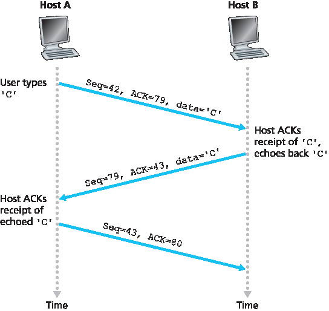
Figure 3.31 Sequence and acknowledgment numbers for a simple Telnet application over TCP
As shown in Figure 3.31, three segments are sent. The first segment is sent from the client to the server, containing the 1-byte ASCII representation of the letter ‘C’ in its data field. This first segment also has 42 in its sequence number field, as we just described. Also, because the client has not yet received any data from the server, this first segment will have 79 in its acknowledgment number field.
The second segment is sent from the server to the client. It serves a dual purpose. First it provides an acknowledgment of the data the server has received. By putting 43 in the acknowledgment field, the server is telling the client that it has successfully received everything up through byte 42 and is now waiting for bytes 43 onward. The second purpose of this segment is to echo back the letter ‘C.’ Thus, the second segment has the ASCII representation of ‘C’ in its data field. This second segment has the sequence number 79, the initial sequence number of the server-to-client data flow of this TCP connection, as this is the very first byte of data that the server is sending. Note that the acknowledgment for client-to-server data is carried in a segment carrying server-to-client data; this acknowledgment is said to be piggybacked on the server-to-client data segment.
The third segment is sent from the client to the server. Its sole purpose is to acknowledge the data it has received from the server. (Recall that the second segment contained data—the letter ‘C’—from the server to the client.) This segment has an empty data field (that is, the acknowledgment is not being piggybacked with any client-to-server data). The segment has 80 in the acknowledgment number field because the client has received the stream of bytes up through byte sequence number 79 and it is now waiting for bytes 80 onward. You might think it odd that this segment also has a sequence number since the segment contains no data. But because TCP has a sequence number field, the segment needs to have some sequence number.
3.5.3 往返时间估计和超时#
3.5.3 Round-Trip Time Estimation and Timeout
TCP, like our rdt protocol in Section 3.4, uses a timeout/retransmit mechanism to recover from lost
segments. Although this is conceptually simple, many subtle issues arise when we implement a
timeout/retransmit mechanism in an actual protocol such as TCP. Perhaps the most obvious question is
the length of the timeout intervals. Clearly, the timeout should be larger than the connection’s round-trip
time (RTT), that is, the time from when a segment is sent until it is acknowledged. Otherwise,
unnecessary retransmissions would be sent. But how much larger? How should the RTT be estimated in
the first place? Should a timer be associated with each and every unacknowledged segment? So many
questions! Our discussion in this section is based on the TCP work in [Jacobson 1988] and the current
IETF recommendations for managing TCP timers [RFC 6298].
Estimating the Round-Trip Time#
Let’s begin our study of TCP timer management by considering how TCP estimates the round-trip time
between sender and receiver. This is accomplished as follows. The sample RTT, denoted SampleRTT ,
for a segment is the amount of time between when the segment is sent (that is, passed to IP) and when
an acknowledgment for the segment is received. Instead of measuring a SampleRTT for every
transmitted segment, most TCP implementations take only one SampleRTT measurement at a time.
That is, at any point in time, the SampleRTT is being estimated for only one of the transmitted but
currently unacknowledged segments, leading to a new value of SampleRTT approximately once every
RTT. Also, TCP never computes a SampleRTT for a segment that has been retransmitted; it only
measures SampleRTT for segments that have been transmitted once [Karn 1987]. (A problem at the
end of the chapter asks you to consider why.)
Obviously, the SampleRTT values will fluctuate from segment to segment due to congestion in the
routers and to the varying load on the end systems. Because of this fluctuation, any given SampleRTT
value may be atypical. In order to estimate a typical RTT, it is therefore natural to take some sort of
average of the SampleRTT values. TCP maintains an average, called EstimatedRTT , of the
SampleRTT values. Upon obtaining a new SampleRTT , TCP updates EstimatedRTT according to
the following formula:
EstimatedRTT=(1−α)⋅EstimatedRTT+α⋅SampleRTT
The formula above is written in the form of a programming-language statement—the new value of EstimatedRTT is a weighted combination of the previous value of EstimatedRTT and the new value for SampleRTT. The recommended value of α is α = 0.125 (that is, 1/8) [RFC 6298], in which case the formula above becomes:
EstimatedRTT=0.875⋅EstimatedRTT+0.125⋅SampleRTT
Note that EstimatedRTT is a weighted average of the SampleRTT values. As discussed in a homework
problem at the end of this chapter, this weighted average puts more weight on recent samples than on
old samples. This is natural, as the more recent samples better reflect the current congestion in the
network. In statistics, such an average is called an exponential weighted moving average (EWMA).
The word “exponential” appears in EWMA because the weight of a given SampleRTT decays
exponentially fast as the updates proceed. In the homework problems you will be asked to derive the
exponential term in EstimatedRTT .
Figure 3.32 shows the SampleRTT values and EstimatedRTT for a value of α = 1/8 for a TCP
connection between gaia.cs.umass.edu (in Amherst, Massachusetts) to fantasia.eurecom.fr
(in the south of France). Clearly, the variations in the SampleRTT are smoothed out in the computation
of the EstimatedRTT .
In addition to having an estimate of the RTT, it is also valuable to have a measure of the variability of the
RTT. [RFC 6298] defines the RTT variation, DevRTT , as an estimate of how much SampleRTT
typically deviates from EstimatedRTT :
DevRTT=(1−β)⋅DevRTT+β⋅|SampleRTT−EstimatedRTT|
Note that DevRTT is an EWMA of the difference between SampleRTT and EstimatedRTT . If the
SampleRTT values have little fluctuation, then DevRTT will be small; on the other hand, if there is a lot
of fluctuation, DevRTT will be large. The recommended value of β is 0.25.
Setting and Managing the Retransmission Timeout Interval#
Given values of EstimatedRTT and DevRTT , what value should be used for TCP’s timeout interval?
Clearly, the interval should be greater than or equal to EstimatedRTT , or unnecessary retransmissions would be sent. But the timeout interval should not be
too much larger than EstimatedRTT ; otherwise, when a segment is lost, TCP would not quickly
retransmit the segment, leading to large data transfer delays. It is therefore desirable to set the timeout
equal to the EstimatedRTT plus some margin. The margin should be large when there is a lot of
fluctuation in the SampleRTT values; it should be small when there is little fluctuation. The value of
DevRTT should thus come into play here. All of these considerations are taken into account in TCP’s
method for determining the retransmission timeout interval:
TimeoutInterval=EstimatedRTT+4⋅DevRTT
PRINCIPLES IN PRACTICE
TCP provides reliable data transfer by using positive acknowledgments and timers in much the same way that we studied in Section 3.4. TCP acknowledges data that has been received correctly, and it then retransmits segments when segments or their corresponding acknowledgments are thought to be lost or corrupted. Certain versions of TCP also have an implicit NAK mechanism—with TCP’s fast retransmit mechanism, the receipt of three duplicate ACKs for a given segment serves as an implicit NAK for the following segment, triggering retransmission of that segment before timeout. TCP uses sequences of numbers to allow the receiver to identify lost or duplicate segments. Just as in the case of our reliable data transfer protocol, rdt3.0 , TCP cannot itself tell for certain if a segment, or its ACK, is lost, corrupted, or overly delayed. At the sender, TCP’s response will be the same: retransmit the segment in question.
TCP also uses pipelining, allowing the sender to have multiple transmitted but yet-to-be- acknowledged segments outstanding at any given time. We saw earlier that pipelining can greatly improve a session’s throughput when the ratio of the segment size to round-trip delay is small. The specific number of outstanding, unacknowledged segments that a sender can have is determined by TCP’s flow-control and congestion-control mechanisms. TCP flow control is discussed at the end of this section; TCP congestion control is discussed in Section 3.7. For the time being, we must simply be aware that the TCP sender uses pipelining.
An initial TimeoutInterval value of 1 second is recommended [RFC 6298]. Also, when a timeout
occurs, the value of TimeoutInterval is doubled to avoid a premature timeout occurring for a
subsequent segment that will soon be acknowledged. However, as soon as a segment is received and
EstimatedRTT is updated, the TimeoutInterval is again computed using the formula above.
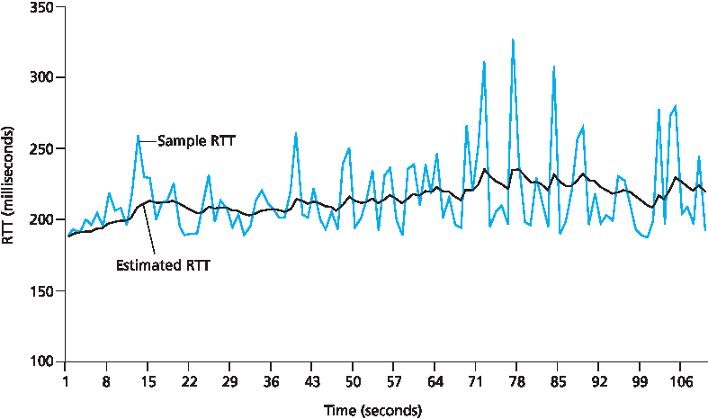
Figure 3.32 RTT samples and RTT estimates
3.5.4 可靠的数据传输#
3.5.4 Reliable Data Transfer
Recall that the Internet’s network-layer service (IP service) is unreliable. IP does not guarantee datagram delivery, does not guarantee in-order delivery of datagrams, and does not guarantee the integrity of the data in the datagrams. With IP service, datagrams can overflow router buffers and never reach their destination, datagrams can arrive out of order, and bits in the datagram can get corrupted (flipped from 0 to 1 and vice versa). Because transport-layer segments are carried across the network by IP datagrams, transport-layer segments can suffer from these problems as well.
TCP creates a reliable data transfer service on top of IP’s unreliable best-effort service. TCP’s reliable data transfer service ensures that the data stream that a process reads out of its TCP receive buffer is uncorrupted, without gaps, without duplication, and in sequence; that is, the byte stream is exactly the same byte stream that was sent by the end system on the other side of the connection. How TCP provides a reliable data transfer involves many of the principles that we studied in Section 3.4.
In our earlier development of reliable data transfer techniques, it was conceptually easiest to assumethat an individual timer is associated with each transmitted but not yet acknowledged segment. While this is great in theory, timer management can require considerable overhead. Thus, the recommended TCP timer management procedures [RFC 6298] use only a single retransmission timer, even if there are multiple transmitted but not yet acknowledged segments. The TCP protocol described in this section follows this single-timer recommendation.
We will discuss how TCP provides reliable data transfer in two incremental steps. We first present a highly simplified description of a TCP sender that uses only timeouts to recover from lost segments; we then present a more complete description that uses duplicate acknowledgments in addition to timeouts. In the ensuing discussion, we suppose that data is being sent in only one direction, from Host A to Host B, and that Host A is sending a large file.
Figure 3.33 presents a highly simplified description of a TCP sender. We see that there are three major
events related to data transmission and retransmission in the TCP sender: data received from
application above; timer timeout; and ACK receipt. Upon the occurrence of the first major event, TCP receives data from the application,
encapsulates the data in a segment, and passes the segment to IP. Note that each segment includes a
sequence number that is the byte-stream number of the first data byte in the segment, as described in
Section 3.5.2. Also note that if the timer is already not running for some other segment, TCP starts the
timer when the segment is passed to IP. (It is helpful to think of the timer as being associated with the
oldest unacknowledged segment.) The expiration interval for this timer is the TimeoutInterval ,
which is calculated from EstimatedRTT and DevRTT , as described in Section 3.5.3.
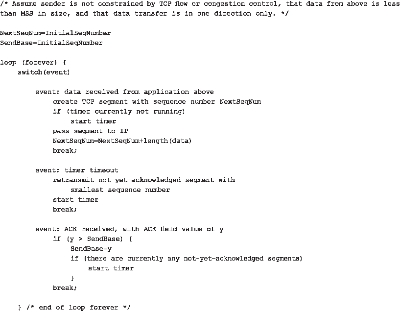
Figure 3.33 Simplified TCP sender
The second major event is the timeout. TCP responds to the timeout event by retransmitting the segment that caused the timeout. TCP then restarts the timer.
The third major event that must be handled by the TCP sender is the arrival of an acknowledgment
segment (ACK) from the receiver (more specifically, a segment containing a valid ACK field value). On
the occurrence of this event, TCP compares the ACK value y with its variable SendBase . The TCP
state variable SendBase is the sequence number of the oldest unacknowledged byte. (Thus
SendBase-1 is the sequence number of the last byte that is known to have been received correctly
and in order at the receiver.) As indicated earlier, TCP uses cumulative acknowledgments, so that y
acknowledges the receipt of all bytes before byte number y . If y > SendBase , then the ACK is
acknowledging one or more previously unacknowledged segments. Thus the sender updates its
SendBase variable; it also restarts the timer if there currently are any not-yet-acknowledged segments.
A Few Interesting Scenarios#
We have just described a highly simplified version of how TCP provides reliable data transfer. But even this highly simplified version has many subtleties. To get a good feeling for how this protocol works, let’s now walk through a few simple scenarios. Figure 3.34 depicts the first scenario, in which Host A sends one segment to Host B. Suppose that this segment has sequence number 92 and contains 8 bytes of data. After sending this segment, Host A waits for a segment from B with acknowledgment number 100. Although the segment from A is received at B, the acknowledgment from B to A gets lost. In this case, the timeout event occurs, and Host A retransmits the same segment. Of course, when Host B receives the retransmission, it observes from the sequence number that the segment contains data that has already been received. Thus, TCP in Host B will discard the bytes in the retransmitted segment.
In a second scenario, shown in Figure 3.35, Host A sends two segments back to back. The first segment has sequence number 92 and 8 bytes of data, and the second segment has sequence number 100 and 20 bytes of data. Suppose that both segments arrive intact at B, and B sends two separate acknowledgments for each of these segments. The first of these acknowledgments has acknowledgment number 100; the second has acknowledgment number 120. Suppose now that neither of the acknowledgments arrives at Host A before the timeout. When the timeout event occurs, Host A resends the first segment with sequence number 92 and restarts the timer. As long as the ACK for the second segment arrives before the new timeout, the second segment will not be retransmitted.
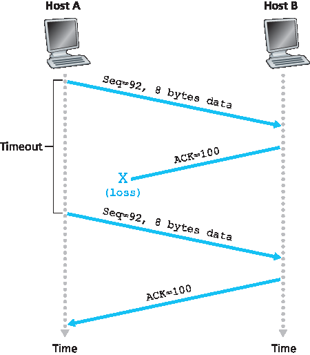
Figure 3.34 Retransmission due to a lost acknowledgment
In a third and final scenario, suppose Host A sends the two segments, exactly as in the second example. The acknowledgment of the first segment is lost in the network, but just before the timeout event, Host A receives an acknowledgment with acknowledgment number 120. Host A therefore knows that Host B has received everything up through byte 119; so Host A does not resend either of the two segments. This scenario is illustrated in Figure 3.36.
Doubling the Timeout Interval#
We now discuss a few modifications that most TCP implementations employ. The first concerns the
length of the timeout interval after a timer expiration. In this modification, whenever the timeout event
occurs, TCP retransmits the not-yet-acknowledged segment with the smallest sequence number, as
described above. But each time TCP retransmits, it sets the next timeout interval to twice the previous
value, rather than deriving it from the last EstimatedRTT and DevRTT (as described in Section 3.5.3). For
example, suppose TimeoutInterval associated with the oldest not yet acknowledged segment is
.75 sec when the timer first expires. TCP will then retransmit this segment and set the new expiration
time to 1.5 sec. If the timer expires again 1.5 sec later, TCP will again retransmit this segment, now
setting the expiration time to 3.0 sec. Thus the intervals grow exponentially after each retransmission.
However, whenever the timer is started after either of the two other events (that is, data received from
application above, and ACK received), the TimeoutInterval is derived from the most recent values
of EstimatedRTT and DevRTT .
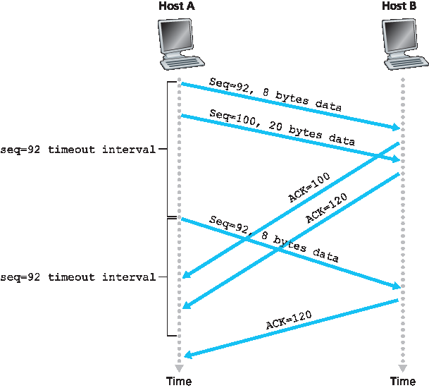
Figure 3.35 Segment 100 not retransmitted
This modification provides a limited form of congestion control. (More comprehensive forms of TCP congestion control will be studied in Section 3.7.) The timer expiration is most likely caused by congestion in the network, that is, too many packets arriving at one (or more) router queues in the path between the source and destination, causing packets to be dropped and/or long queuing delays. In times of congestion, if the sources continue to retransmit packets persistently, the congestion may get worse. Instead, TCP acts more politely, with each sender retransmitting after longer and longer intervals. We will see that a similar idea is used by Ethernet when we study CSMA/CD in Chapter 6.
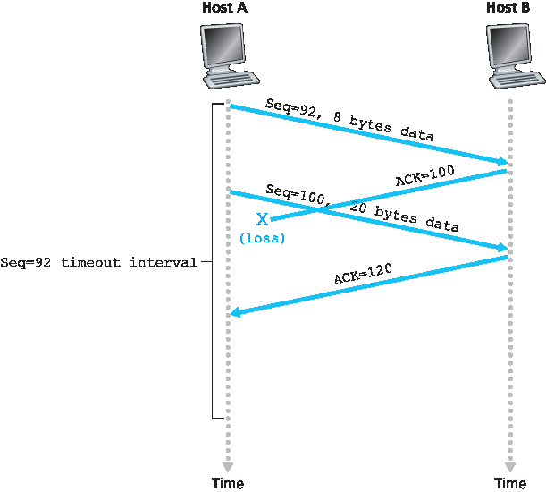
Figure 3.36 A cumulative acknowledgment avoids retransmission of the first segment
Fast Retransmit#
One of the problems with timeout-triggered retransmissions is that the timeout period can be relatively long. When a segment is lost, this long timeout period forces the sender to delay resending the lost packet, thereby increasing the end-to-end delay. Fortunately, the sender can often detect packet loss well before the timeout event occurs by noting so-called duplicate ACKs. A duplicate ACK is an ACK that reacknowledges a segment for which the sender has already received an earlier acknowledgment. To understand the sender’s response to a duplicate ACK, we must look at why the receiver sends a duplicate ACK in the first place. Table 3.2 summarizes the TCP receiver’s ACK generation policy [RFC 5681]. When a TCP receiver receives a segment with a sequence number that is larger than the next, expected, in-order sequence number, it detects a gap in the data stream—that is, a missing segment. This gap could be the result of lost or reordered segments within the network. Since TCP does not use negative acknowledgments, the receiver cannot send an explicit negative acknowledgment back to the sender. Instead, it simply reacknowledges (that is, generates a duplicate ACK for) the last in-order byte of data it has received. (Note that Table 3.2 allows for the case that the receiver does not discard out-of-order segments.)
Table 3.2 TCP ACK Generation Recommendation [RFC 5681]
Event |
TCP Receiver Action |
|---|---|
Arrival of in-order segment with expected sequence number. All data up to expected sequence number already acknowledged. |
Delayed ACK. Wait up to 500 msec for arrival of another in-order segment. If next in-order segment does not arrive in this interval, send an ACK. |
Arrival of in-order segment with expected sequence number. One other in-order segment waiting for ACK transmission. |
One Immediately send single cumulative ACK, ACKing both in-order segments. |
Arrival of out-of-order segment with higher-than-expected sequence number. Gap detected. |
Immediately send duplicate ACK, indicating sequence number of next expected byte (which is the lower end of the gap). |
Arrival of segment that partially or completely fills in gap in received data. |
Immediately send ACK, provided that segment starts at the lower end of gap. |
Because a sender often sends a large number of segments back to back, if one segment is lost, there will likely be many back-to-back duplicate ACKs. If the TCP sender receives three duplicate ACKs for the same data, it takes this as an indication that the segment following the segment that has been ACKed three times has been lost. (In the homework problems, we consider the question of why the sender waits for three duplicate ACKs, rather than just a single duplicate ACK.) In the case that three duplicate ACKs are received, the TCP sender performs a fast retransmit [RFC 5681], retransmitting the missing segment before that segment’s timer expires. This is shown in Figure 3.37, where the second segment is lost, then retransmitted before its timer expires. For TCP with fast retransmit, the following code snippet replaces the ACK received event in Figure 3.33:
event: ACK received, with ACK field value of y
if (y > SendBase) {
SendBase=y
if (there are currently any not yet
acknowledged segments)
start timer
else { /* a duplicate ACK for already ACKed segment */
increment number of duplicate ACKs received for y
if (number of duplicate ACKS received for y==3)
/* TCP fast retransmit */
resend segment with sequence number y
}
break;
}
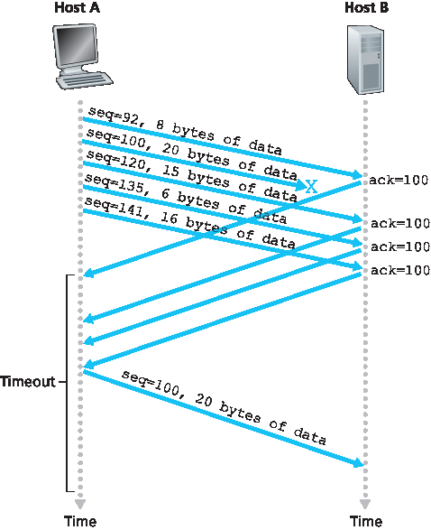
Figure 3.37 Fast retransmit: retransmitting the missing segment before the segment’s timer expires
We noted earlier that many subtle issues arise when a timeout/retransmit mechanism is implemented in an actual protocol such as TCP. The procedures above, which have evolved as a result of more than 20 years of experience with TCP timers, should convince you that this is indeed the case!
Go-Back-N or Selective Repeat?#
Let us close our study of TCP’s error-recovery mechanism by considering the following question: Is TCP
a GBN or an SR protocol? Recall that TCP acknowledgments are cumulative and correctly received but
out-of-order segments are not individually ACKed by the receiver. Consequently, as shown in Figure 3.33 (see also Figure 3.19), the TCP sender need only maintain the smallest sequence number of a
transmitted but unacknowledged byte ( SendBase ) and the sequence number of the next byte to be
sent ( NextSeqNum ). In this sense, TCP looks a lot like a GBN-style protocol. But there are some
striking differences between TCP and Go-Back-N. Many TCP implementations will buffer correctly
received but out-of-order segments [Stevens 1994]. Consider also what happens when the sender
sends a sequence of segments 1, 2, …, N, and all of the segments arrive in order without error at the
receiver. Further suppose that the acknowledgment for packet n<N gets lost, but the remaining N−1
acknowledgments arrive at the sender before their respective timeouts. In this example, GBN would
retransmit not only packet n, but also all of the subsequent packets n+1,n+2,…,N. TCP, on the other
hand, would retransmit at most one segment, namely, segment n. Moreover, TCP would not even
retransmit segment n if the acknowledgment for segment n+1 arrived before the timeout for segment n.
A proposed modification to TCP, the so-called selective acknowledgment [RFC 2018], allows a TCP receiver to acknowledge out-of-order segments selectively rather than just cumulatively acknowledging the last correctly received, in-order segment. When combined with selective retransmission—skipping the retransmission of segments that have already been selectively acknowledged by the receiver—TCP looks a lot like our generic SR protocol. Thus, TCP’s error-recovery mechanism is probably best categorized as a hybrid of GBN and SR protocols.
3.5.5 流控#
3.5.5 Flow Control
Recall that the hosts on each side of a TCP connection set aside a receive buffer for the connection. When the TCP connection receives bytes that are correct and in sequence, it places the data in the receive buffer. The associated application process will read data from this buffer, but not necessarily at the instant the data arrives. Indeed, the receiving application may be busy with some other task and may not even attempt to read the data until long after it has arrived. If the application is relatively slow at reading the data, the sender can very easily overflow the connection’s receive buffer by sending too much data too quickly.
TCP provides a flow-control service to its applications to eliminate the possibility of the sender overflowing the receiver’s buffer. Flow control is thus a speed-matching service—matching the rate at which the sender is sending against the rate at which the receiving application is reading. As noted earlier, a TCP sender can also be throttled due to congestion within the IP network; this form of sender control is referred to as congestion control, a topic we will explore in detail in Sections 3.6 and 3.7. Even though the actions taken by flow and congestion control are similar (the throttling of the sender), they are obviously taken for very different reasons. Unfortunately, many authors use the terms interchangeably, and the savvy reader would be wise to distinguish between them. Let’s now discuss how TCP provides its flow-control service. In order to see the forest for the trees, we suppose throughout this section that the TCP implementation is such that the TCP receiver discards out-of-order segments.
TCP provides flow control by having the sender maintain a variable called the receive window. Informally, the receive window is used to give the sender an idea of how much free buffer space is available at the receiver. Because TCP is full-duplex, the sender at each side of the connection maintains a distinct receive window. Let’s investigate the receive window in the context of a file transfer. Suppose that Host A is sending a large file to Host B over a TCP connection. Host B allocates a receive buffer to this connection; denote its size by RcvBuffer. From time to time, the application process in Host B reads from the buffer. Define the following variables:
LastByteRead: the number of the last byte in the data stream read from the buffer by the application process in B
LastByteRcvd: the number of the last byte in the data stream that has arrived from the network and has been placed in the receive buffer at B
Because TCP is not permitted to overflow the allocated buffer, we must have
LastByteRcvd-LastByteRead≤RcvBuffer
The receive window, denoted rwnd is set to the amount of spare room in the buffer:
rwnd=RcvBuffer−[LastByteRcvd−LastByteRead]
Because the spare room changes with time, rwnd is dynamic. The variable rwnd is illustrated in Figure 3.38.
How does the connection use the variable rwnd to provide the flow-control service? Host B tells Host A how much spare room it has in the connection buffer by placing its current value of rwnd in the receive window field of every segment it sends to A. Initially, Host B sets rwnd = RcvBuffer. Note that to pull this off, Host B must keep track of several connection-specific variables.
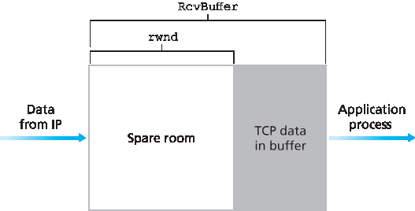
Figure 3.38 The receive window (rwnd) and the receive buffer (RcvBuffer)
Host A in turn keeps track of two variables, LastByteSent and LastByteAcked, which have obvious meanings. Note that the difference between these two variables, LastByteSent – LastByteAcked, is the amount of unacknowledged data that A has sent into the connection. By keeping the amount of unacknowledged data less than the value of rwnd, Host A is assured that it is not overflowing the receive buffer at Host B. Thus, Host A makes sure throughout the connection’s life that
LastByteSent−LastByteAcked≤rwnd
There is one minor technical problem with this scheme. To see this, suppose Host B’s receive buffer
becomes full so that rwnd = 0. After advertising rwnd = 0 to Host A, also suppose that B has nothing to send to A. Now consider what happens. As the application process at B empties the buffer, TCP does not send new segments with new rwnd values to Host A; indeed, TCP sends a segment to Host A only if it has data to send or if it has an acknowledgment to send. Therefore, Host A is never informed that some space has opened up in Host B’s receive buffer—Host A is blocked and can transmit no more data! To solve this problem, the TCP specification requires Host A to continue to send segments with one data byte when B’s receive window is zero. These segments will be acknowledged by the receiver. Eventually the buffer will begin to empty and the acknowledgments will contain a nonzero rwnd value.
The online site at http://www.awl.com/kurose-ross for this book provides an interactive Java applet that illustrates the operation of the TCP receive window.
Having described TCP’s flow-control service, we briefly mention here that UDP does not provide flow control and consequently, segments may be lost at the receiver due to buffer overflow. For example, consider sending a series of UDP segments from a process on Host A to a process on Host B. For a typical UDP implementation, UDP will append the segments in a finite-sized buffer that “precedes” the corresponding socket (that is, the door to the process). The process reads one entire segment at a time from the buffer. If the process does not read the segments fast enough from the buffer, the buffer will overflow and segments will get dropped.
3.5.6 TCP 连接管理#
3.5.6 TCP Connection Management
In this subsection we take a closer look at how a TCP connection is established and torn down. Although this topic may not seem particularly thrilling, it is important because TCP connection establishment can significantly add to perceived delays (for example, when surfing the Web). Furthermore, many of the most common network attacks—including the incredibly popular SYN flood attack—exploit vulnerabilities in TCP connection management. Let’s first take a look at how a TCP connection is established. Suppose a process running in one host (client) wants to initiate a connection with another process in another host (server). The client application process first informs the client TCP that it wants to establish a connection to a process in the server. The TCP in the client then proceeds to establish a TCP connection with the TCP in the server in the following manner:
Step 1. The client-side TCP first sends a special TCP segment to the server-side TCP. This special segment contains no application-layer data. But one of the flag bits in the segment’s header (see Figure 3.29), the SYN bit, is set to 1. For this reason, this special segment is referred to as a SYN segment. In addition, the client randomly chooses an initial sequence number (
client_isn) and puts this number in the sequence number field of the initial TCP SYN segment. This segment is encapsulated within an IP datagram and sent to the server. There has been considerable interest in
properly randomizing the choice of the client_isn in order to avoid certain security attacks [CERT 2001–09].
- Step 2. Once the IP datagram containing the TCP SYN segment arrives at the server host (assuming it does arrive!), the server extracts the TCP SYN segment from the datagram, allocates the TCP buffers and variables to the connection, and sends a connection-granted segment to the client TCP. (We’ll see in Chapter 8 that the allocation of these buffers and variables before completing the third step of the three-way handshake makes TCP vulnerable to a denial-of-service attack known as SYN flooding.) This connection-granted segment also contains no application-layer data. However, it does contain three important pieces of information in the segment header. First, the SYN bit is set to 1. Second, the acknowledgment field of the TCP segment header is set to client_isn+1. Finally, the server chooses its own initial sequence number (server_isn) and puts this value in the sequence number field of the TCP segment header. This connection-granted segment is saying, in effect, “I received your SYN packet to start a connection with your initial sequence number, client_isn. I agree to establish this connection. My own initial sequence number is server_isn.” The connection-granted segment is referred to as a SYNACK segment.
- Step 3. Upon receiving the SYNACK segment, the client also allocates buffers and variables to the connection. The client host then sends the server yet another segment; this last segment acknowledges the server’s connection-granted segment (the client does so by putting the value server_isn+1 in the acknowledgment field of the TCP segment header). The SYN bit is set to zero, since the connection is established. This third stage of the three-way handshake may carry client-to-server data in the segment payload.
Once these three steps have been completed, the client and server hosts can send segments containing data to each other. In each of these future segments, the SYN bit will be set to zero. Note that in order to establish the connection, three packets are sent between the two hosts, as illustrated in Figure 3.39. For this reason, this connection-establishment procedure is often referred to as a three- way handshake. Several aspects of the TCP three-way handshake are explored in the homework problems (Why are initial sequence numbers needed? Why is a three-way handshake, as opposed to a two-way handshake, needed?). It’s interesting to note that a rock climber and a belayer (who is stationed below the rock climber and whose job it is to handle the climber’s safety rope) use a three- way-handshake communication protocol that is identical to TCP’s to ensure that both sides are ready before the climber begins ascent.
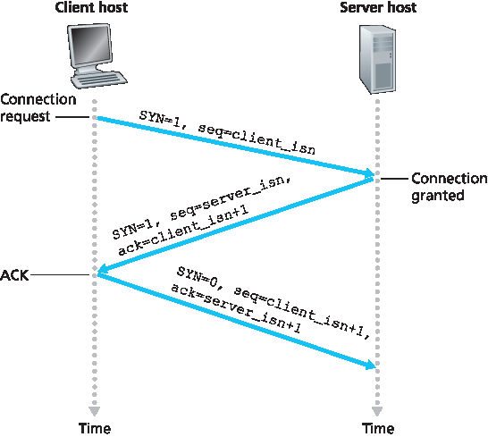
Figure 3.39 TCP three-way handshake: segment exchange
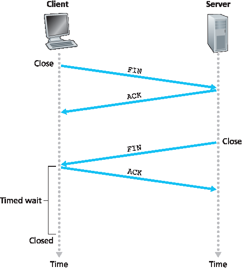
Figure 3.40 Closing a TCP connection
All good things must come to an end, and the same is true with a TCP connection. Either of the two processes participating in a TCP connection can end the connection. When a connection ends, the “resources” (that is, the buffers and variables) in the hosts are deallocated. As an example, suppose the client decides to close the connection, as shown in Figure 3.40. The client application process issues a close command. This causes the client TCP to send a special TCP segment to the server process. This special segment has a flag bit in the segment’s header, the FIN bit (see Figure 3.29), set to 1. When the server receives this segment, it sends the client an acknowledgment segment in return. The server then sends its own shutdown segment, which has the FIN bit set to 1. Finally, the client acknowledges the server’s shutdown segment. At this point, all the resources in the two hosts are now deallocated.
During the life of a TCP connection, the TCP protocol running in each host makes transitions through various TCP states. Figure 3.41 illustrates a typical sequence of TCP states that are visited by the client TCP. The client TCP begins in the CLOSED state. The application on the client side initiates a new TCP connection (by creating a Socket object in our Java examples as in the Python examples from Chapter 2). This causes TCP in the client to send a SYN segment to TCP in the server. After having sent the SYN segment, the client TCP enters the SYN_SENT state. While in the SYN_SENT state, the client TCP waits for a segment from the server TCP that includes an acknowledgment for the client’s previous segment and has the SYN bit set to 1. Having received such a segment, the client TCP enters the ESTABLISHED state. While in the ESTABLISHED state, the TCP client can send and receive TCP segments containing payload (that is, application-generated) data.
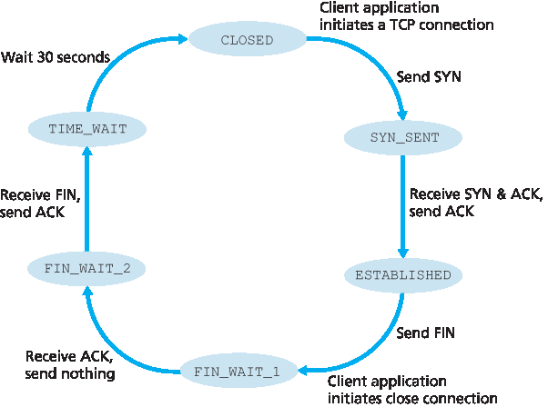
Figure 3.41 A typical sequence of TCP states visited by a client TCP
Suppose that the client application decides it wants to close the connection. (Note that the server could also choose to close the connection.) This causes the client TCP to send a TCP segment with the FIN bit set to 1 and to enter the FIN_WAIT_1 state. While in the FIN_WAIT_1 state, the client TCP waits for a TCP segment from the server with an acknowledgment. When it receives this segment, the client TCP enters the FIN_WAIT_2 state. While in the FIN_WAIT_2 state, the client waits for another segment from the server with the FIN bit set to 1; after receiving this segment, the client TCP acknowledges the server’s segment and enters the TIME_WAIT state. The TIME_WAIT state lets the TCP client resend the final acknowledgment in case the ACK is lost. The time spent in the TIME_WAIT state is implementation-dependent, but typical values are 30 seconds, 1 minute, and 2 minutes. After the wait, the connection formally closes and all resources on the client side (including port numbers) are released.
Figure 3.42 illustrates the series of states typically visited by the server-side TCP, assuming the client begins connection teardown. The transitions are self-explanatory. In these two state-transition diagrams, we have only shown how a TCP connection is normally established and shut down. We have not described what happens in certain pathological scenarios, for example, when both sides of a connection want to initiate or shut down at the same time. If you are interested in learning about this and other advanced issues concerning TCP, you are encouraged to see Stevens’ comprehensive book [Stevens 1994].
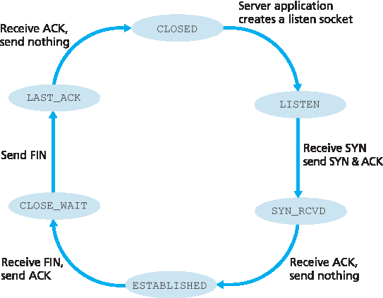
Figure 3.42 A typical sequence of TCP states visited by a server-side TCP
Our discussion above has assumed that both the client and server are prepared to communicate, i.e., that the server is listening on the port to which the client sends its SYN segment. Let’s consider what happens when a host receives a TCP segment whose port numbers or source IP address do not match with any of the ongoing sockets in the host. For example, suppose a host receives a TCP SYN packet with destination port 80, but the host is not accepting connections on port 80 (that is, it is not running a Web server on port 80). Then the host will send a special reset segment to the source. This TCP segment has the RST flag bit (see Section 3.5.2) set to 1. Thus, when a host sends a reset segment, it is telling the source “I don’t have a socket for that segment. Please do not resend the segment.” When a host receives a UDP packet whose destination port number doesn’t match with an ongoing UDP socket, the host sends a special ICMP datagram, as discussed in Chapter 5.
Now that we have a good understanding of TCP connection management, let’s revisit the nmap port- scanning tool and examine more closely how it works. To explore a specific TCP port, say port 6789, on a target host, nmap will send a TCP SYN segment with destination port 6789 to that host. There are three possible outcomes:
The source host receives a TCP SYNACK segment from the target host. Since this means that an application is running with TCP port 6789 on the target post, nmap returns “open.”
FOCUS ON SECURITY
The Syn Flood Attack
We’ve seen in our discussion of TCP’s three-way handshake that a server allocates and initializes connection variables and buffers in response to a received SYN. The server then sends a SYNACK in response, and awaits an ACK segment from the client. If the client does not send an ACK to complete the third step of this 3-way handshake, eventually (often after a minute or more) the server will terminate the half-open connection and reclaim the allocated resources.
This TCP connection management protocol sets the stage for a classic Denial of Service (DoS) attack known as the SYN flood attack. In this attack, the attacker(s) send a large number of TCP SYN segments, without completing the third handshake step. With this deluge of SYN segments, the server’s connection resources become exhausted as they are allocated (but never used!) for half-open connections; legitimate clients are then denied service. Such SYN flooding attacks were among the first documented DoS attacks [CERT SYN 1996]. Fortunately, an effective defense known as SYN cookies [RFC 4987] are now deployed in most major operating systems. SYN cookies work as follows:
When the server receives a SYN segment, it does not know if the segment is coming from a legitimate user or is part of a SYN flood attack. So, instead of creating a half-open TCP connection for this SYN, the server creates an initial TCP sequence number that is a complicated function (hash function) of source and destination IP addresses and port numbers of the SYN segment, as well as a secret number only known to the server. This carefully crafted initial sequence number is the so-called “cookie.” The server then sends the client a SYNACK packet with this special initial sequence number. Importantly, the server does not remember the cookie or any other state information corresponding to the SYN.
A legitimate client will return an ACK segment. When the server receives this ACK, it must verify that the ACK corresponds to some SYN sent earlier. But how is this done if the server maintains no memory about SYN segments? As you may have guessed, it is done with the cookie. Recall that for a legitimate ACK, the value in the acknowledgment field is equal to the initial sequence number in the SYNACK (the cookie value in this case) plus one (see Figure 3.39). The server can then run the same hash function using the source and destination IP address and port numbers in the SYNACK (which are the same as in the original SYN) and the secret number. If the result of the function plus one is the same as the acknowledgment (cookie) value in the client’s SYNACK, the server concludes that the ACK corresponds to an earlier SYN segment and is hence valid. The server then creates a fully open connection along with a socket.
On the other hand, if the client does not return an ACK segment, then the original SYN has done no harm at the server, since the server hasn’t yet allocated any resources in response to the original bogus SYN.
The source host receives a TCP RST segment from the target host. This means that the SYN segment reached the target host, but the target host is not running an application with TCP port 6789. But the attacker at least knows that the segments destined to the host at port 6789 are not blocked by any firewall on the path between source and target hosts. (Firewalls are discussed in Chapter 8.)
The source receives nothing. This likely means that the SYN segment was blocked by an intervening firewall and never reached the target host.
Nmap is a powerful tool that can “case the joint” not only for open TCP ports, but also for open UDP ports, for firewalls and their configurations, and even for the versions of applications and operating systems. Most of this is done by manipulating TCP connection-management segments [Skoudis 2006]. You can download nmap from www.nmap.org.
This completes our introduction to error control and flow control in TCP. In Section 3.7 we’ll return to TCP and look at TCP congestion control in some depth. Before doing so, however, we first step back and examine congestion-control issues in a broader context.